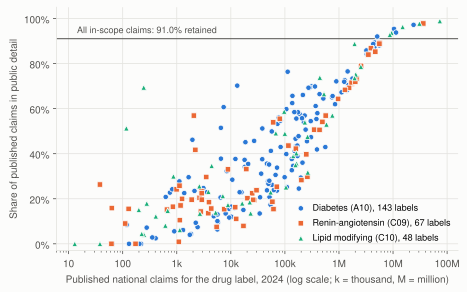
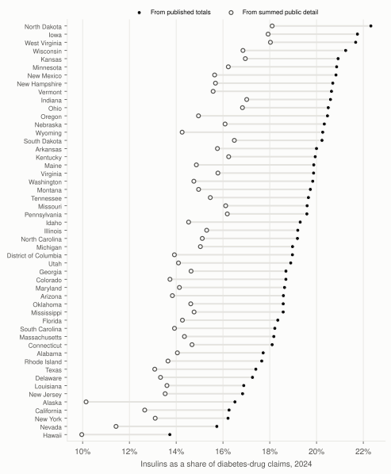

What summed Medicare Part D detail leaves out
Researchers often add up the rows of the public Medicare Part D prescriber-drug file to compare drugs and states. That file drops every prescriber-drug pair with 10 or fewer claims. How much of each published total is left, and does the shortfall change the comparisons people report?

The summary files include claims omitted from public detail
CMS publishes three Part D prescriber files each year. The Provider and Drug file has one row per prescriber, brand name and generic name, and leaves out any pair with 10 or fewer claims. The Geography and Drug file gives national and state totals for each drug label, and CMS builds it from all Part D prescription drug events, not from the trimmed detail. That makes it a same-source reference for checking the detail sums.
I used the 2024 files (28,023,892 detail rows, 1,139,455 prescribers) and repeated the full analysis on the 2023 and 2022 files. I set the eligibility rule before making any comparison: diabetes drugs, renin-angiotensin agents and lipid modifying agents in Anatomical Therapeutic Chemical (ATC) groups A10, C09 and C10, mapped through the National Library of Medicine RxClass service. The final set has 259 labels, after I removed a device label that had been mapped in error. That correction, a similar one for an electrolyte solution in the 2023 files, and the reruns are recorded in the analysis plan.
I checked each gap against the rule that should explain it
For every drug label, nationally and in each state, I divided the detail sum D by the published total A. The Geography and Drug file also publishes how many prescribers stand behind each total, and the detail file has one row per prescriber per label, so the number of prescribers whose rows are missing is known. If the 10-claim rule is the only cause, each missing row holds 1 to 10 claims, which bounds the gap. All 11,663 cells in 2024 fell inside that range, as did every cell in 2023 and 2022. A gap inside the range is consistent with the rule; it does not prove that nothing else contributes.
I wrote a second program using only the Python standard library. It recomputed every cell's sums, status and bound check from the raw files for all three years (310,437 values, 0 mismatches), and a clean rebuild reproduced 1,122,578 values within tolerance.
Design choices behind the analysis
Use the summary built from all claims as the denominator
The By Provider summary also comes from all claims, but it has no drug detail, so it cannot serve as a drug-level denominator. I used it only for a separate all-drug check, which found that 95.0% of the national gap sits in dropped rows of prescribers who do appear in the detail file, not in whole missing prescribers.
Keep combination products whole, and hold back small residuals
A combination such as sitagliptin and metformin is one label with one claim total, so I never split it into its two ingredients. A gap can reveal the values of suppressed rows when only one or two rows are missing, when it is 1 to 10 claims, or when it sits at either end of the allowed range. For that reason, the public tables give drug-by-state cells only as bands and withhold even the band in those cases (230 state cells in 2024). The public output rule also rounds all other detail sums to the nearest 10 claims, and I checked that no withheld value can be worked out exactly from the published tables. I computed the summaries before applying that rule.
High overall completeness hides large gaps for individual drugs
Nationally, the detail held 91.0% of in-scope claims but only 84.2% of gross drug cost. The weighted figure is driven by a few high-volume generics: the 43 labels with at least 1,000,000 claims retained 93.5%, while the 88 labels with fewer than 10,000 claims retained 21.5%. Statins (97.3%) and metformin (96.1%) were nearly complete. Insulins (68.2%), diabetes combination products (60.2%) and fibrates (68.5%) were not. State completeness ranged from 83.8% in the District of Columbia to 92.5% in Missouri.

Because insulins lose more claims than metformin does, the insulin share computed from detail was 14.7% instead of 18.6% nationally, and lower in every state. The state ordering by insulin share changed enough that 25 of 51 jurisdictions moved five or more places and only 7 states appeared in both top-10 lists. Orderings for SGLT2 inhibitors, statins, metformin and ACE inhibitors barely moved. Two very small groups, renin inhibitors and other renin-angiotensin agents, reordered more, but each holds under 0.1% of its class's claims. The 2023 and 2022 files showed a similar pattern (90.6% and 90.4% retained overall).
What the gap means, and what it does not
The gap measures how many claims are absent from the summed public detail. Every observed gap is consistent with omission of prescriber-drug rows with 10 or fewer claims, but that check cannot prove the rule is the only cause. It does not identify any prescriber or patient, and nothing here recovers a suppressed row. It says nothing about whether any drug is over- or under-prescribed. Gross drug cost is before rebates and is not what patients pay. For a drug or state total, the published Geography and Drug file answers the question directly. When prescriber detail is needed, report the retained fraction beside the estimate, and never sum beneficiary counts across prescribers.
Limitations
- The reference comes from the same claims and prescriber attribution as the detail file, so the fractions measure agreement between two CMS products, not completeness against all prescribing.
- The scope is the three ATC groups as RxClass lists them. Omega-3 fatty acid esters and icosapent ethyl are not listed there and were left out.
- Geography is the prescriber's address in NPPES, not where patients live.
- The reference also drops state rows below 11 claims (7,158 in-scope claims nationally).
- The files are full administrative totals, so there are no sampling confidence intervals; rank changes are descriptive.
- CMS revises files after release. Results apply to the versions and checksums recorded in the source manifest.
Reproduce the analysis
The source archive runs on Python 3.13 with locked dependencies and needs about 13 GB of disk space for the three years of CMS files.
make setup
make test
make demo # synthetic fixture, a software check only
make all # acquire, build, analyze, validate, render, packageThe audit command checks any compatible pair of CMS release files:
PYTHONPATH=src .venv/bin/python -m psaudit audit \
--detail MUP_DPR_RY26_P04_V10_DY24_NPIBN.csv \
--geography MUP_DPR_RY26_P04_V10_DY24_Geo.csv \
--out audit_2024 --workbookReport, code and data
- Full report with tables and references
- Reconciliation workbook (XLSX) with definitions and sources
- Match and exception ledger, 2024 (CSV)
- National results by drug label (CSV) and state summary (CSV)
- Analysis plan with amendments
- Source code (ZIP)